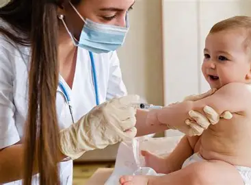

👶 Control del niño sano
Seguimiento del peso, la estatura y el desarrollo.
Aprendamos a cuidar la salud infantil
La pediatría es la especialidad médica dedicada a la salud física, mental y al desarrollo de los niños desde el nacimiento hasta la adolescencia.
Seguimiento del peso, la estatura y el desarrollo.
Evaluación médica de síntomas y enfermedades.
Consejos de alimentación adecuados a la edad.

Orientación sobre vacunas y prevención de enfermedades.
Acude a las revisiones médicas de tu hijo, mantén sus vacunas al día, ofrece una alimentación apropiada para su edad y consulta a un profesional de salud cuando tengas dudas.